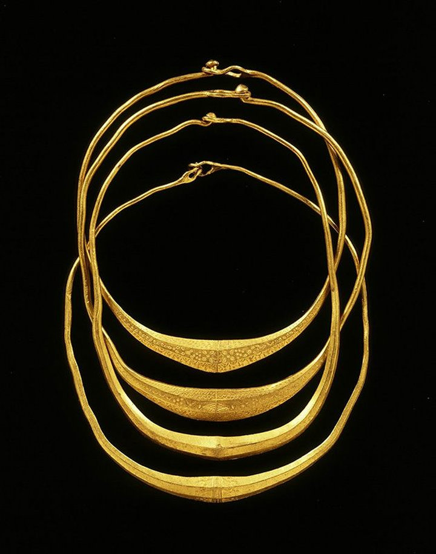

Germanische Goldketten aus Olst
Diese vier Goldketten wurden 1952 an der IJssel bei Olst gefunden. Sie stammen aus der Zeit um 400 n. Chr. Die Ringe sind aus eingeschmolzenen römischen Goldmünzen, sogenannten Solidi, gefertigt. Das Gold hat einen Feingehalt von 22 Karat. Die Ringe sind in der Mitte verdickt und mit Punkten und Kreisen verziert. Solche Motive symbolisieren in der germanischen Tradition die Ewigkeit. Diese Art von Schmuck war ein Zeichen von Macht und wurde von einflussreichen Persönlichkeiten getragen. Warum die Ringe im Boden landeten, ist unklar. Vielleicht wurden sie in einer Zeit der Unruhe versteckt. Es könnte sich aber auch um ein Opfer handeln, um Schutz zu erbitten.